.png)
Animais
Os animais em Red Dead Redemption II possuem uma vida própria dentro do jogo. Eles caçam para se alimentar, morrem, são devorados por outros animais e seguem um ciclo natural semelhante ao da vida real. O jogador pode caçá-los para obter pele e carne, que podem ser vendidas. A qualidade da pele influencia seu valor, sendo que uma pele bem preservada vale mais. Se um animal é morto e deixado morto no ambiente, seu corpo se decomporá e será consumido por urubus e outros necrófagos.
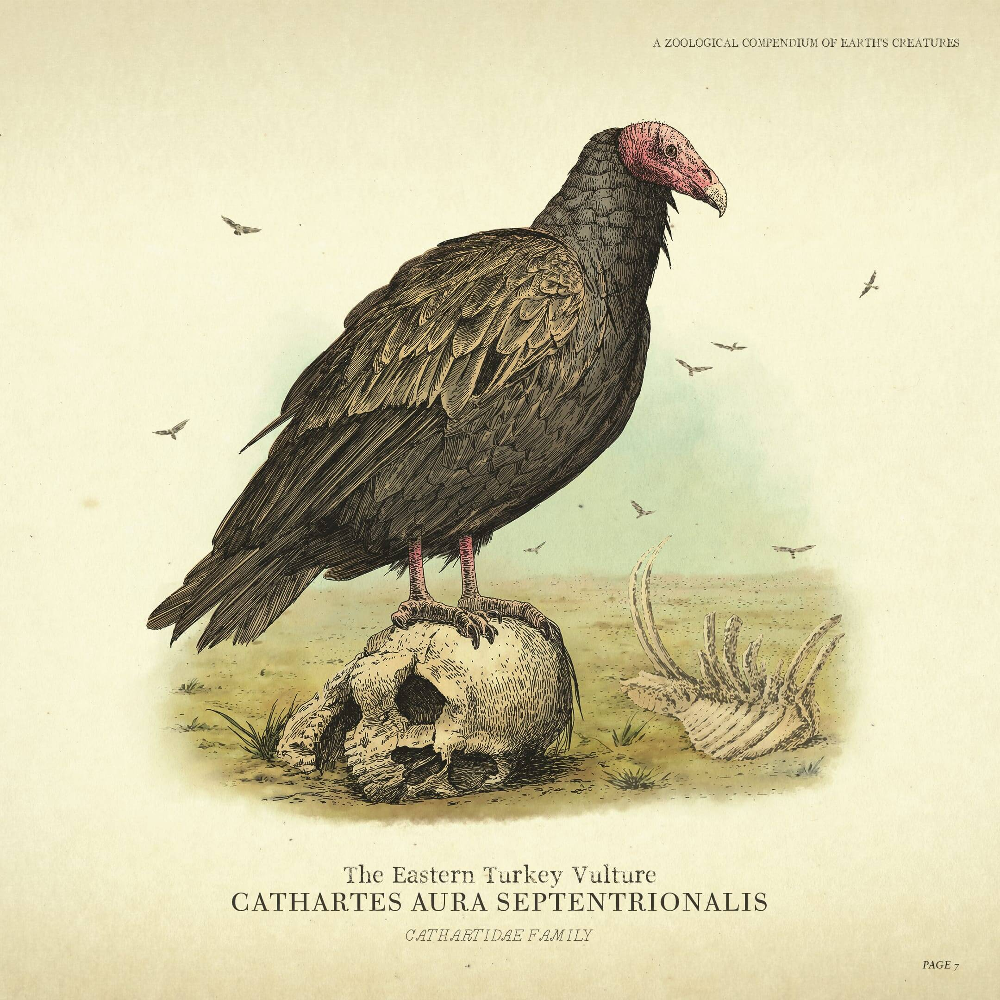
Aves
- Pato
- Falcão
- Águia
- Galo
- Codorna
- Andorinha
- Gavião
- Corvo
- Pica-pau
- Cegonha
- Perdiz
- Corvo-negro
- Gaivota
- Pombo
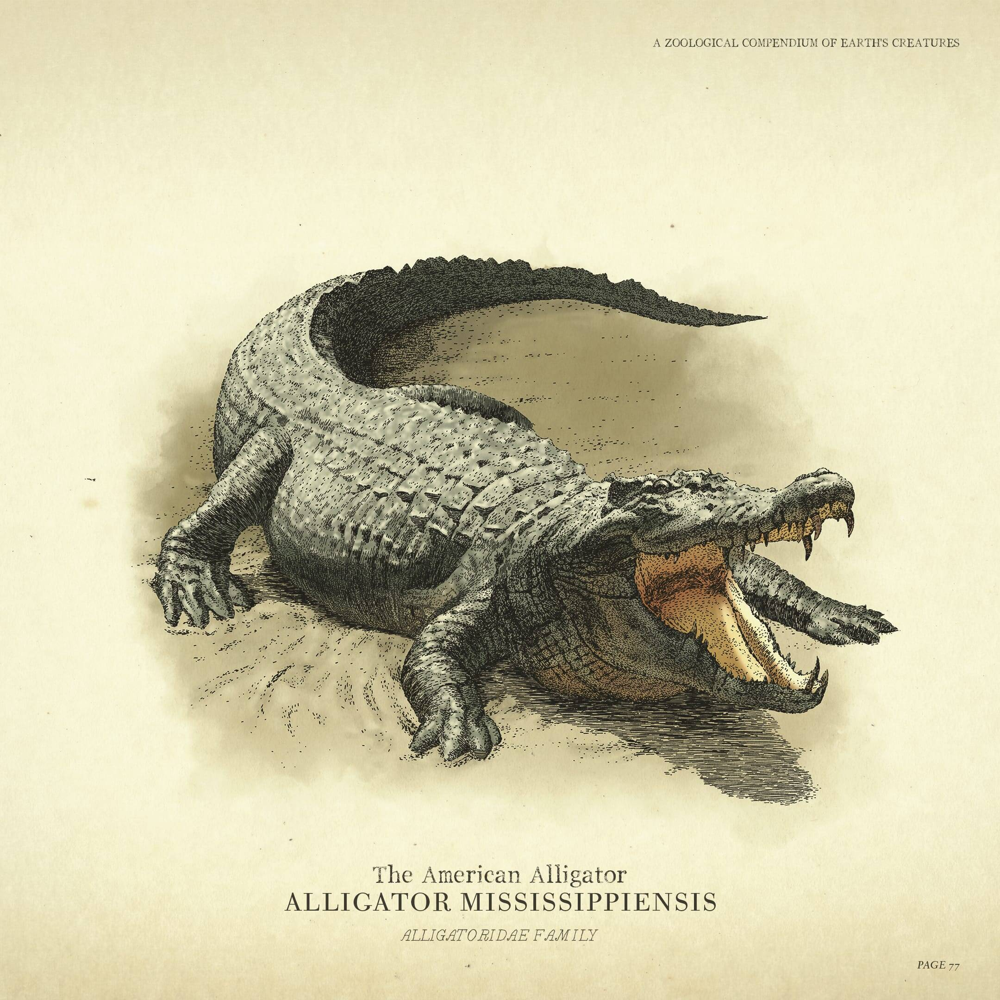
Répteis
- Cobra Cascavel
- Cobra de Água
- Cobra Negra
- Lagarto
- Cobra Prateada
- Crocodilo
- Jacaré
- Sapo
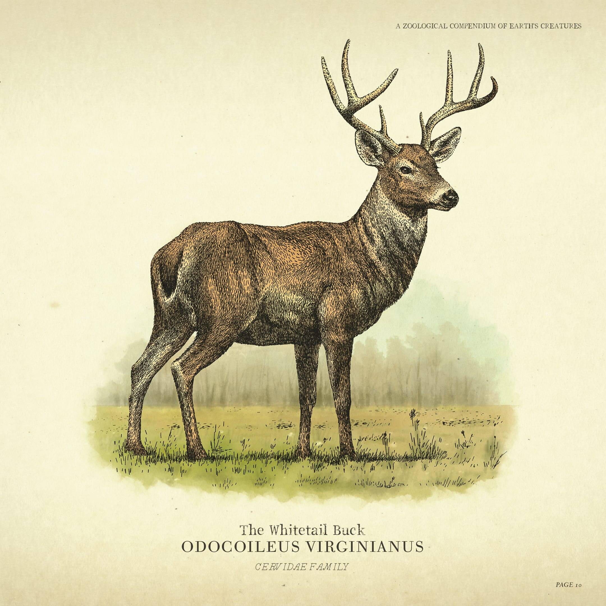
Mamíferos
- Veado de Cauda Branca
- Alce
- Cervo
- Búfalo
- Búfalo Selvagem
- Coelho
- Esquilo
- Lobo
- Urso
- Onça
- Lince
- Cavalos Selvagens
- Gado (vacas e bois)
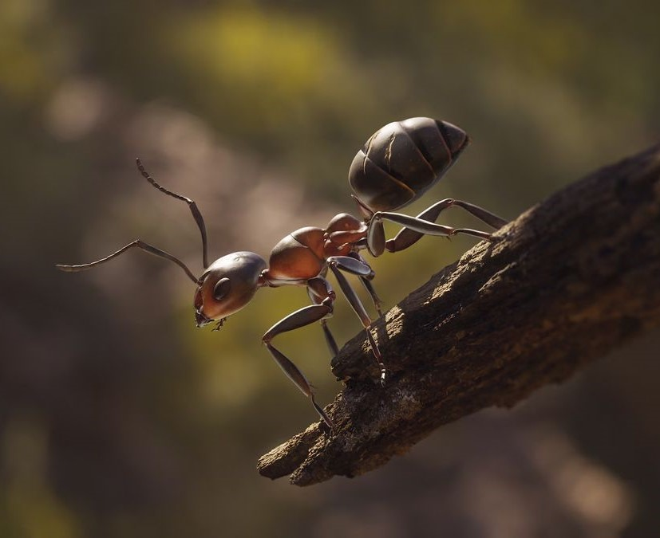
Insetos
- Libélula
- Borboleta
- Grilo
- Abelha
- Joaninha
- Besouro
- Formiga
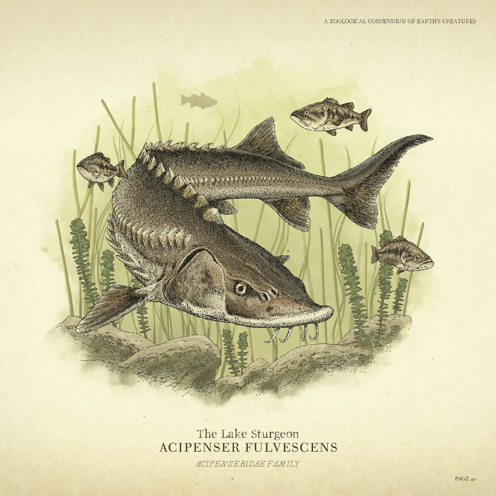
Peixes
- Truta
- Salmão
- Bacalhau
- Perch
- Bagre
- Tilápia
- Piranha
- Carpa
- Black Bass
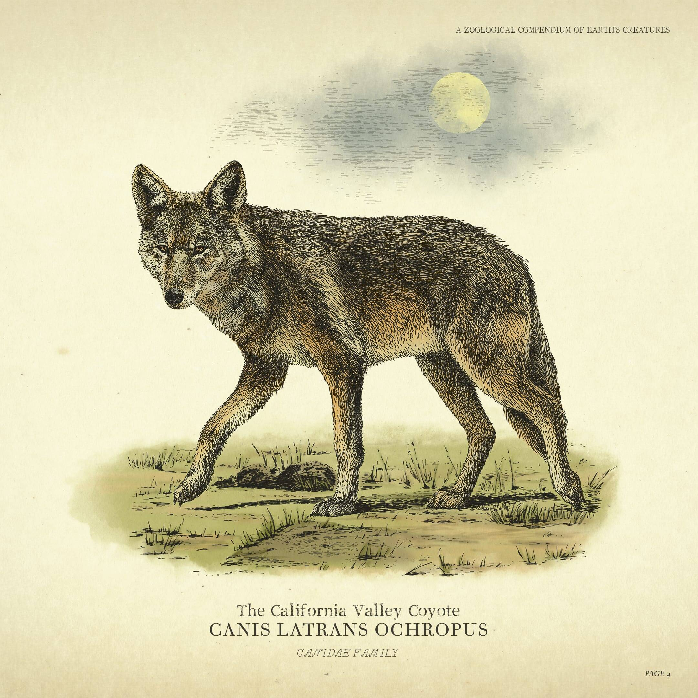
Mamíferos
- Pantera
- Raposa
- Coiote
- Guaxinim
- Porco
- Cavalo
- Puma
- Mula
- Búfalo do Rio
- Carneiro Selvagem
- Búfalo de Planície
- Veados (macho e fêmea)
Cavalos
Há 19 raças de cavalo em Red Dead Redemption II, cada uma com suas próprias características bem definidas. Cavalos podem ser capturados e domados na natureza, comprados em estábulos ou adquiridos de forma mais ardilosa, é claro.Seu cavalo é o seu companheiro de todas as horas, e você contará com ele tanto quanto conta com seus companheiros de gangue, então é importante cuidar bem do seu animal. Mantê-lo limpo e alimentado fará com que o fôlego e o desempenho dele melhorem, e ele se tornará menos agitado conforme o vínculo entre vocês se fortalecer.
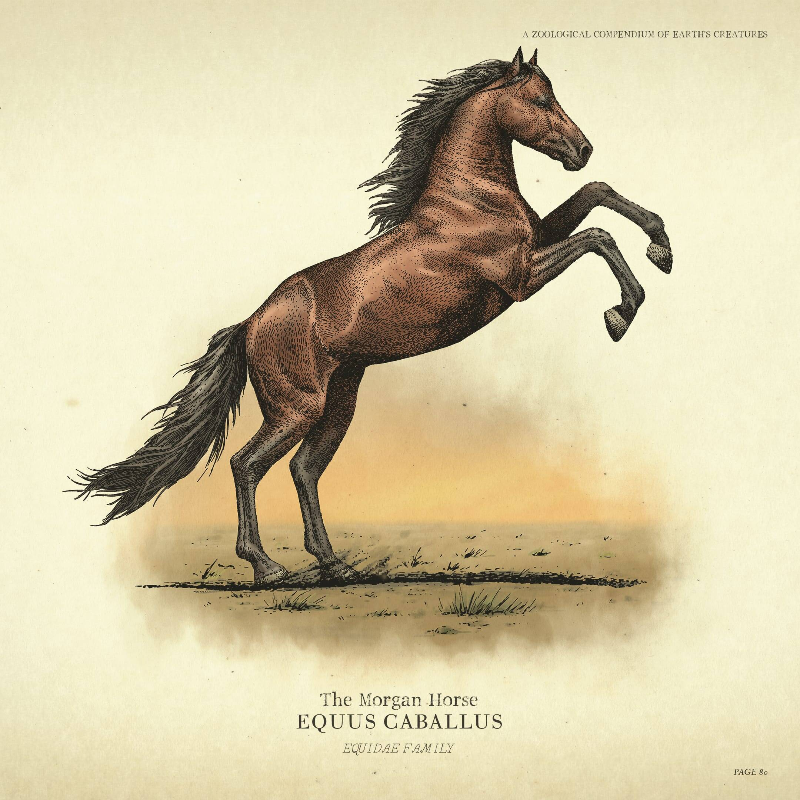
cavalos tradicionais
- Appaloosa
- Ardennes
- Belgian
- Dutch Warmblood
- Kentucky Saddler
- Tennessee Walker
- Mustang
- Nokota
- American Paint Horse
- American Standardbred
- Morgan
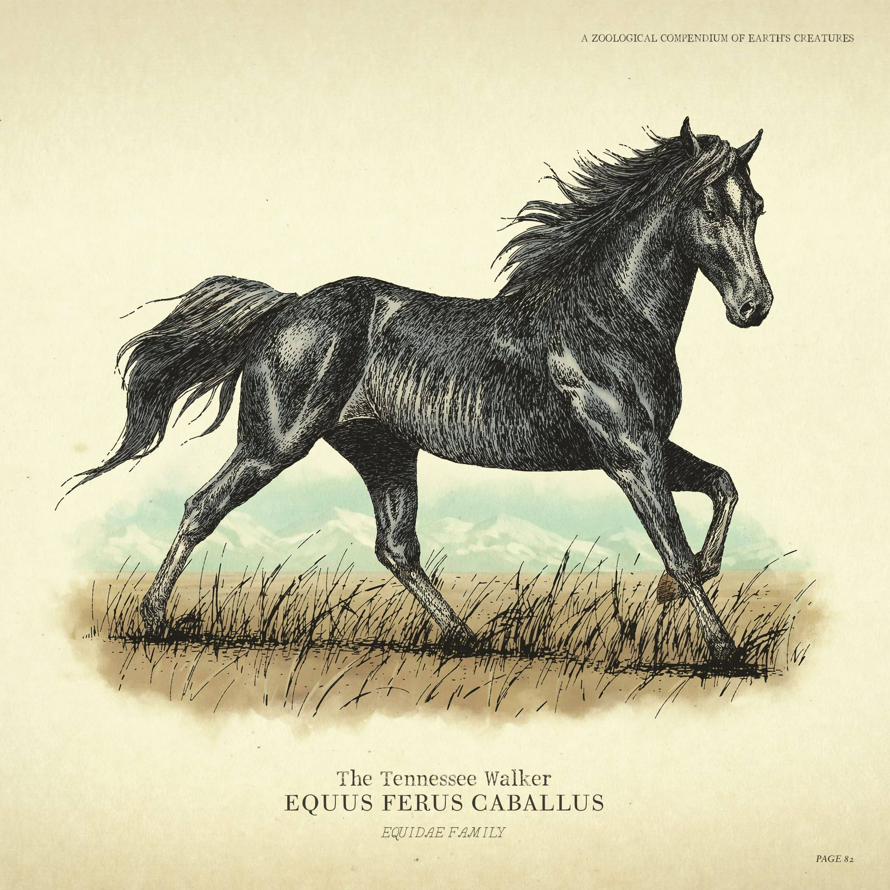
melhores cavalos
- American Standardbred
- Thoroughbred
- Missouri Fox Trotter
- Ardennes
- Andalusian
- Hungarian Halfbred
- Breton
- Turkoman
- Missouri Fox Trotter
- Arabian (Árabe)
- Arabian Black
- Arabian Rose Grey Bay
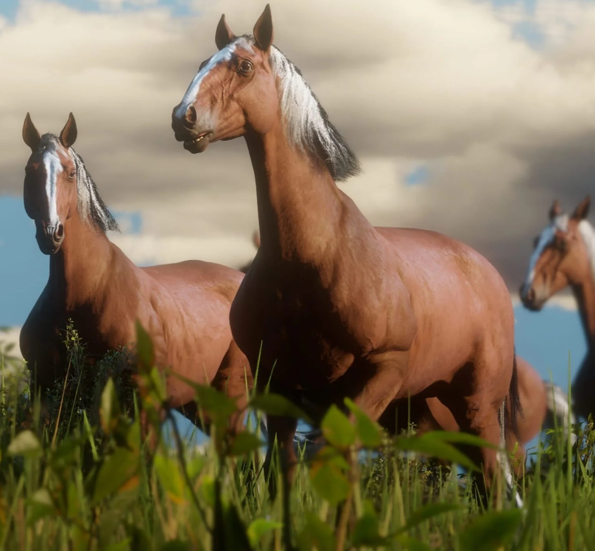
cavalos raros
- White Arabian
- Tiger Striped Bay Mustang
- Baylock (Cavalo do Micah Bell)
- Black Chestnut Thoroughbred
- War Horse
- Arabian White
Animais lendarios
Os animais lendários em Red Dead Redemption 2 são versões raras e únicas de espécies encontradas no jogo. Eles possuem características distintas, como tamanhos maiores, cores diferentes e estatísticas superiores. Caçar esses animais é um desafio, pois são mais resistentes e inteligentes do que os animais comuns. o diferencial deles são sua pele que pode ser vendida em um armadilheiro e criar roupas com elas.
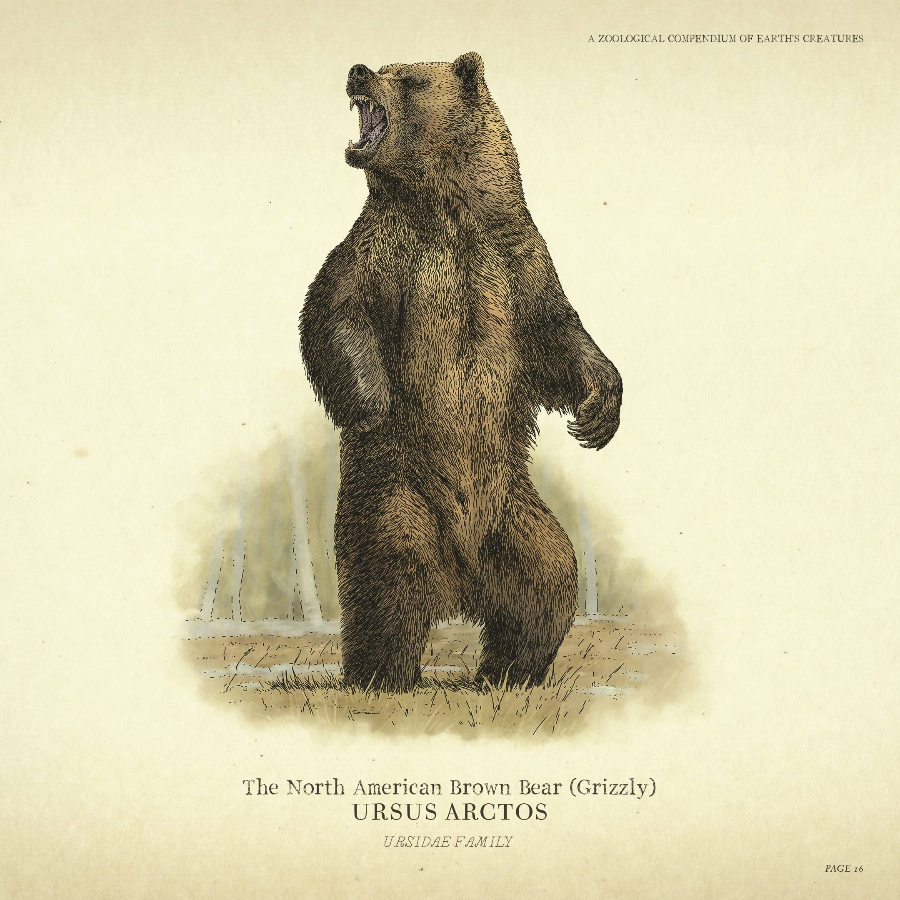
mamiferos lendarios
- Urso Lendário Bharati
- Lobo Lendário
- Búfalo Lendário Tatanka
- Búfalo Lendário Wakpa
- Pantera Lendária Giaguaro
- Javali Lendário
.jpg)
oniferos lendarios
- Jacaré Lendário Teca
- Bagre Lendário
- Salmão Lendário
- Truta Lendária
- Esturjão Lendário
- Perca Lendária
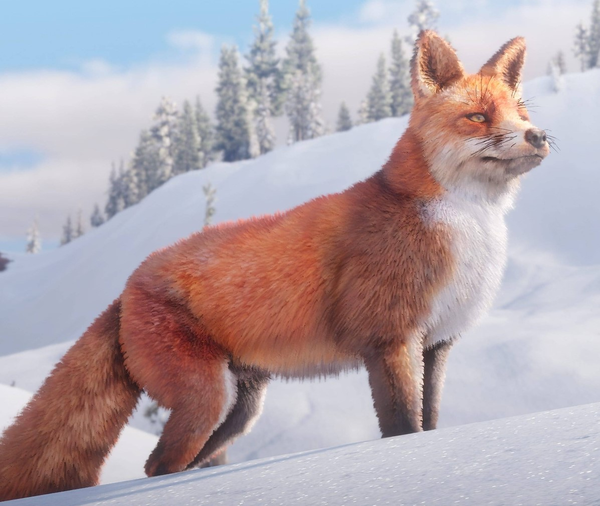
mamiferos menores lendarios
- Alce Lendário
- Bode Lendário
- Castor Lendário
- Raposa Lendária